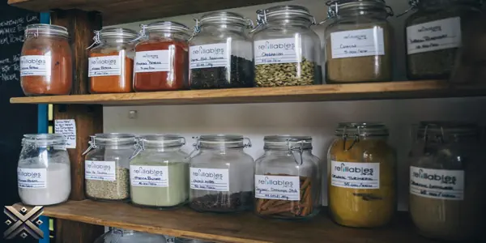
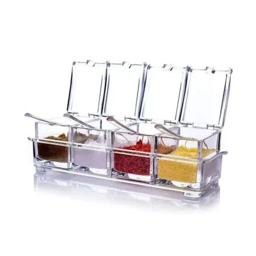
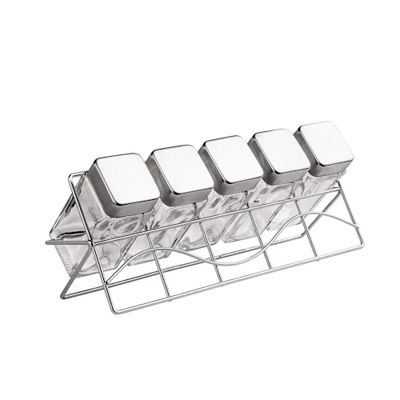
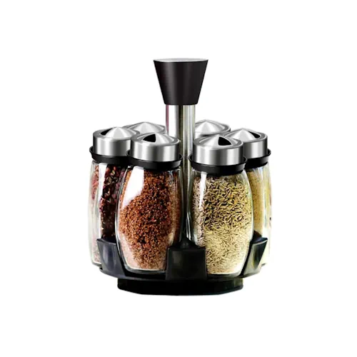
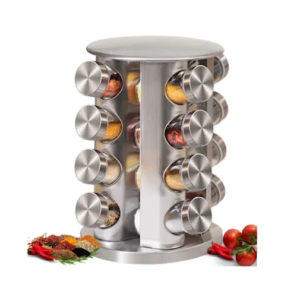
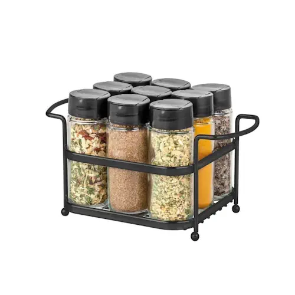

Está em busca do organizador de temperos ideal para deixar sua cozinha mais prática e elegante? Selecionamos os cinco melhores porta temperos disponíveis no mercado em 2025, considerando design, funcionalidade e avaliações reais.
Manter os temperos organizados não apenas melhora a estética da cozinha, mas também facilita o preparo das refeições, confira as opções abaixo e escolha a melhor para o seu dia a dia.

Um porta-temperos é um acessório prático e funcional para organizar e armazenar temperos na cozinha. Ele facilita o acesso aos condimentos durante o preparo das refeições, além de contribuir para a organização e estética do ambiente. Existem diversos modelos disponíveis no mercado e inúmeras possibilidades de fazer um porta-temperos artesanalmente.
Os porta-temperos podem ser fabricados em diferentes materiais, como madeira, metal, acrílico ou vidro. Alguns são fixados na parede, economizando espaço na bancada, enquanto outros são giratórios ou em gavetas deslizantes, proporcionando mais praticidade no uso diário. Modelos magnéticos também são bastante populares, pois permitem que os potes fiquem presos a uma superfície metálica, como a porta da geladeira ou uma chapa de aço instalada na parede.
Para quem gosta de projetos DIY (faça você mesmo), criar um porta-temperos personalizado pode ser uma opção econômica e criativa. Com materiais simples, como tábuas de madeira, potes de vidro e suportes metálicos, é possível montar uma estrutura sob medida para o espaço disponível na cozinha. Além disso, etiquetar os potes ajuda na identificação rápida dos condimentos e contribui para a organização.
Ao escolher um porta-temperos, é importante considerar a quantidade de temperos que serão armazenados e o espaço disponível. Modelos de parede ou suspensos são ideais para cozinhas pequenas, enquanto opções maiores podem ser utilizadas em bancadas espaçosas. Também é essencial garantir que os temperos fiquem armazenados em local seco e longe da luz direta, para preservar seu sabor e aroma por mais tempo.
Independentemente do modelo escolhido, um porta-temperos bem organizado torna o dia a dia na cozinha mais prático e eficiente, além de agregar charme à decoração do ambiente.

Porta Temperos Condimentos em Acrílico com Colher é uma solução prática e sofisticada para quem busca organização. Com quatro potinhos transparentes e colheres individuais, ele facilita o uso no dia a dia. Fabricado em acrílico de alta qualidade, é portátil e fácil de limpar. A transparência dos potes permite visualizar os temperos sem precisar abrir cada um, otimizando a rotina na cozinha. Além disso, o design moderno se adapta bem a qualquer estilo de decoração. Seu tamanho compacto o torna ideal para cozinhas pequenas, garantindo que os temperos estejam sempre organizados sem ocupar muito espaço.
Preço médio: R$ 29.

Esse conjunto inclui cinco porta-condimentos de vidro com capacidade de 120 ml cada. As tampas de aço inoxidável possuem tampos de peneira removíveis, ideais para dosagem precisa. O suporte cromado mantém os potes organizados e acessíveis. O vidro facilita a identificação dos temperos e conserva melhor os ingredientes, evitando a umidade. O aço inox adiciona um toque sofisticado e aumenta a durabilidade do produto. Além disso, o design compacto permite que ele seja colocado sobre a bancada ou dentro do armário sem ocupar muito espaço. É uma ótima opção para quem busca elegância e funcionalidade na cozinha.
Preço médio: R$ 70.

O conjunto Unyhome combina resistência e sofisticação. Com seis porta-condimentos feitos de vidro, aço inox e plástico, ele conta com um suporte prático e elegante. Ideal para quem quer aliar estética e funcionalidade na cozinha. O material de alta qualidade garante maior durabilidade e resistência a impactos. O suporte mantém os potes organizados e acessíveis, facilitando o uso diário. Esse conjunto é perfeito para quem deseja um toque moderno na cozinha, proporcionando uma experiência mais prática e organizada. Além disso, seu design permite fácil reposição dos condimentos e limpeza rápida.
Preço médio: R$ 49.

Esse modelo giratório permite visualizar todos os temperos com facilidade. Com 16 potes de vidro e estrutura de aço inox, ele mantém os condimentos organizados e acessíveis. O acabamento sofisticado torna o produto um destaque na cozinha. Seu sistema giratório é ideal para quem gosta de praticidade, permitindo acesso rápido aos temperos sem precisar procurar um por um. A capacidade de 80g por pote é suficiente para armazenar uma grande variedade de condimentos. Além disso, seu design robusto garante estabilidade e durabilidade, sendo uma ótima escolha para quem cozinha frequentemente.
Preço médio: R$ 97.

Líder do nosso ranking, o Porta Temperos Passerini traz um suporte de aço epóxi preto resistente e nove potes de vidro com tampas dosadoras. Seu design funcional otimiza a organização, mantendo os temperos frescos e bem armazenados. O suporte é projetado para oferecer estabilidade e fácil acesso aos temperos durante o preparo das refeições. Além disso, os potes são fáceis de lavar e possuem tampas herméticas que evitam a perda de aroma e sabor dos condimentos. Com um visual sofisticado, esse modelo se destaca na cozinha, agregando elegância e praticidade ao ambiente.
Preço médio: R$ 113.
Escolher o porta tempero ideal pode transformar sua experiência na cozinha, trazendo mais praticidade e organização para o seu dia a dia. Com tantas opções disponíveis, é importante considerar não apenas o design, mas também a funcionalidade e a durabilidade do produto. Se você prefere modelos compactos e discretos ou opções mais sofisticadas e completas, há sempre um porta tempero que se adapta às suas necessidades. Esperamos que este guia tenha sido útil para ajudar na sua escolha. Para mais dicas e comparativos de produtos, continue acompanhando nosso blog e fique por dentro das melhores novidades do mercado!